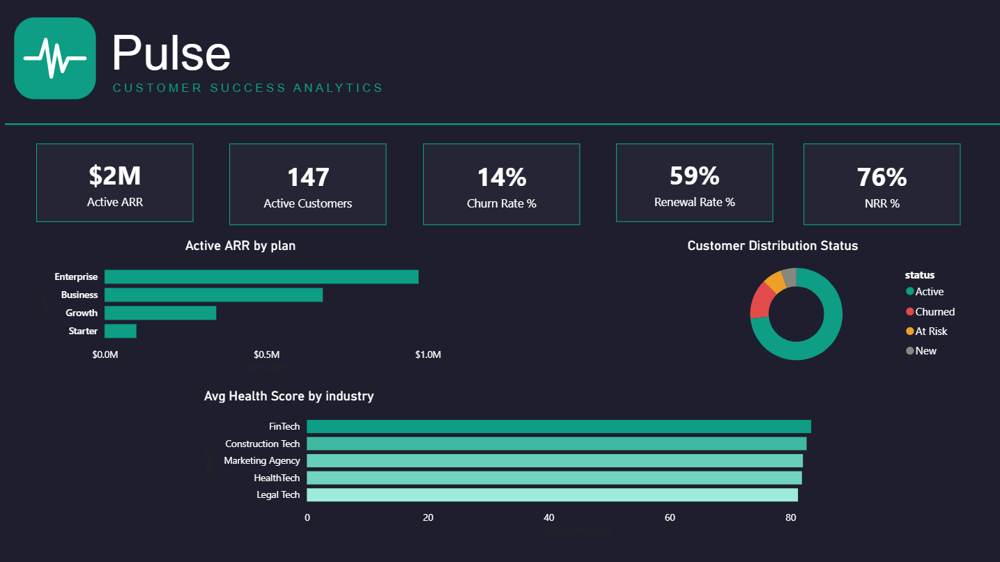

Pulse is a fictional B2B SaaS platform. I built a synthetic dataset of 200 SMB and Enterprise accounts from scratch using Python, modeling realistic churn patterns, health score trends, seat adoption behavior, and renewal outcomes across a 24 month window.
The goal was to answer the three questions a CS team asks every week: how healthy is the book, why are customers leaving, and are they actually using the product? Every visual on the dashboard traces back to one of those questions. Nothing is decorative.
Pricing was the leading churn driver at 9 accounts, nearly double the next closest reason. The more actionable finding was seat adoption: all four plan tiers plateaued around 60% within the first quarter and never recovered. That is not a pricing problem. It is an onboarding problem.
Health scores dipped sharply in early 2023 before recovering steadily through 2024, suggesting the CS team course-corrected mid-year. Logistics and FinTech led renewal rates at 91% and 82% respectively, while Legal Tech sat at 46%. That is the clearest signal of where to focus retention resources.
Enterprise accounts closed renewals in 59 days versus 51 for SMB. Given the higher ACV and stakeholder complexity, that gap is expected. Narrowing it by even a week represents meaningful ARR acceleration across the book.
The dataset was built across six tables: customers, health scores, product usage, touchpoints, renewals, and CSM reps. These connect in a galaxy schema with customers and CSM reps as the central dimension tables. All DAX measures live in a dedicated measures table to keep the model clean and the report pages fast.